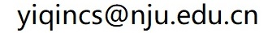

What：数理逻辑是数学的一个分支，是数学基础中不可或缺的组成部分。数理逻辑的研究范围是逻辑中能够被数学形式化描述和推演的部分。其研究对象是对证明和计算这两个直观概念进行符号化之后的形式系统。
Who： 秦逸（南京大学仙林校区计算机科学与技术系楼501室； 
Where： 仙林校区逸夫楼A-322
When： 每周五2-4节（09:00 -- 12:00），1-16周
Which： 从2025-26年学年春季学期开始，本课程将会进行结构性调整。课程范围将从纯粹的数理逻辑理论，拓展至作为朴素概念的逻辑、作为形式化数学系统的逻辑，以及工程化计算机系统的逻辑这三个部分。此举旨在培养学生针对计算机科学相关信息，具备独立自主的逻辑判断与推理能力。考虑到目前尚无单一教材能够完全契合这一需求，现阶段将以课程讲义作为主要的学习资料。同时，推荐同学们参考相关的经典教材作为课余辅助。
本课程的考核由三个部分组成：平时成绩占总评的10%，课程作业占40%，期末考试占50%。
特别说明： 本课程鼓励学生使用人工智能助手辅助完成加工作业。但是使用此类工具的前提是学生必须对最终提交的内容具有完全的掌握度，并且能够准确解释作业中的所有解题推导与编程细节。我们不强制禁止人工智能的使用，但过度依赖此类工具可能会导致学生在期末考试中无法适应独立解答的要求。
2026-02-27：相关课程材料已上传。
2026-02-27：课程主页正式建立。
课程讲义通常会在上课前发布，但内容可能会根据教学进度随时更新。请同学们密切关注文件的更新时间，以确保获取的是最新版本。
课程的专属助教邮箱为 mathlogicnju@163.com。在提交作业时，请务必将邮件主题格式设定为“学号+姓名+第XX次作业”。同学们可以提交纯电子版作业，也可以提交手写作业的高清扫描件或照片，但请务必保证提交版本的清晰度与可读性。
本课程的书面作业包含大量的数学公式推导与排版。强烈推荐大家使用科技排版系统LaTeX来完成并提交电子版作业。LaTeX是由图灵奖得主Leslie Lamport设计开发的专业排版系统，在当今的学术论文撰写中发挥着不可替代的作用。您可以前往CTeX的官方网站下载其适用的中文发行版。
在参考书目选择方面，由于主教材侧重于数理逻辑原理的数学化表达，可能会给同学们的课余阅读带来一定挑战。您可以自由选择其他参考书籍作为辅助理解的工具：
本课程的许多问题都会要求您进行严格的“证明”，即给出令人信服的逻辑推演来解释某个命题为何成立。为了确保您的书面论证能够清晰传达思想并获得相应的认可，您的证明过程应当尽可能贴近专业教科书的规范。您的证明需要由完整的、语法正确的句子构成。证明中出现的所有变量，要么是题目陈述中已有的元素，要么必须在推理过程中通过明确的文字进行引入和定义。每一个陈述步骤都必须清晰地遵循先前的逻辑基础并附带原理解释，或者具有明确的论证目的，例如明确宣告进入反证法假设或归纳法步骤。同时，任何直接引用的现成结论都应当标明其通用的学术名称或标注出处。
撰写证明的核心目的，并非仅仅向评分者展示您内心理解了题意，而是向具备相应基础但尚未思考过该问题的读者，完整地重现您的推理方案。在这个过程中，书面文字是您唯一的交流媒介。因此，讲师在课堂上的部分简写板书并不能直接等同于严谨的书面证明，因为它们脱离了当时的口头讲解后往往缺乏完整的逻辑链条。证明的评判标准在于评分者能否仅凭您的文字描述就毫无障碍地复现您的推理过程。如果因为表述跳跃导致评分者无法理解您的精妙构思，您可以在作业或考试成绩发布后，与讲师当面探讨并审查证明的合理性。